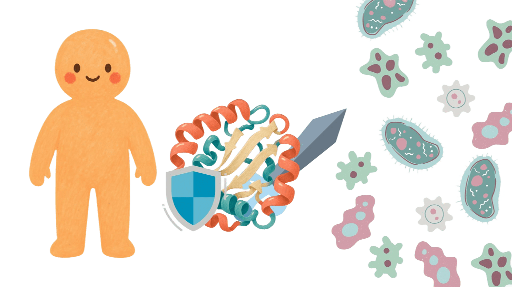
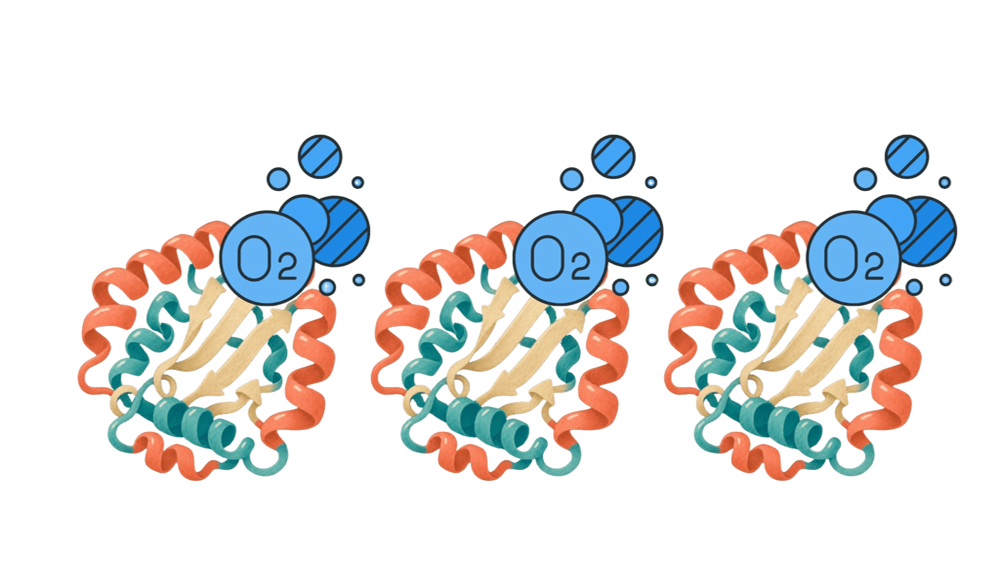

AMINOÁCIDOS E PROTEÍNAS
Os aminoácidos são as unidades básicas das proteínas, substâncias essenciais para o crescimento e o funcionamento do organismo.
O que são aminoácidos?
Aminoácidos são moléculas orgânicas que possuem grupos amino e carboxila. Eles são as unidades básicas que formam as proteínas.
Como se formam as proteínas?
As proteínas são formadas pela união de aminoácidos por meio de ligações peptídicas. A união de vários aminoácidos origina cadeias chamadas polipeptídeos, que se organizam e formam proteínas.Ligação peptídica
É a ligação química que une dois aminoácidos. Ela ocorre entre o grupo carboxila de um aminoácido e o grupo amino de outro, com liberação de uma molécula de água.No dia a dia
As proteínas estão presentes em alimentos como ovos, carnes, leite, feijão e lentilha. Também participam da construção e reparação dos tecidos e da contração muscular.Funções das proteínas
- Defesa: os anticorpos ajudam o sistema imunológico a reconhecer e combater agentes estranhos.

- Transporte: a hemoglobina, presente nas hemácias, transporta oxigênio pelo sangue.

Saiba mais
As proteínas também incluem enzimas, que aceleram reações químicas realizadas pelo organismo. A sequência e a organização dos aminoácidos influenciam a função de cada proteína.